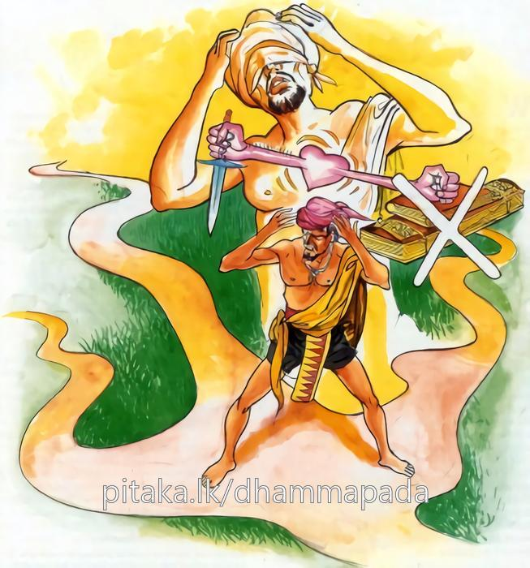
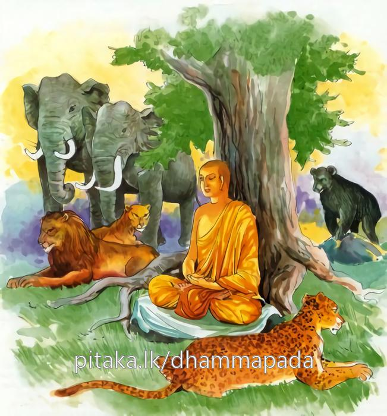

3-5 පස්වන චිත්තහත්ථ තෙරුන්ගේ වස්තුවයි.
මෙම කතාව සද්ධර්ම සාගරයෙන් ද කියවන්න.
අනවට්ඨිතචිත්තස්ස සද්ධම්මං අවිජානතො
පරිප්ලවපසාදස්ස පඤ්ඤා න පරිපූරති.
(දහවෙයියා රැසෙක හිඳු වූ කණුවක් මෙන් කලෙක නිවටු ව ද කලෙක තවුස් ව ද කලෙක ගිහි ව දැ යි යන ආදි වශයෙන්) අනවස්ථිත සිත් ඇති, (බෝපැකි) දහම් නොදන්නා, (අචල ප්රසාදයෙහි නො පිහිටි හෙයින් හෝ සැදැහැ මඳ හෙයින්) ඉපිලෙන සැදැහැ ඇත්තාහට (කාමාවචරාදි ප්රභේද ඇති) ප්රඥාව නො පිරෙයි.

අනවස්සුතචිත්තස්ස අනන්වාහතචෙතසො
පුඤ්ඤපාපපහීණස්ස නත්ථි ජාගරතො භයං.
රාගයෙන් නොතෙත් වූ සිතැති, ද්වේෂයෙන් නොපැහැරුණු සිතැති, (රහත්මඟින්) කුසල් අකුසල් ප්රහීණ කළ, (ශ්රඬාදී පංච ජාගර ධර්මයෙන් යුක්ත බැවින්) නො නිදන රහත්හට කෙලෙසුන්ගෙන් බියෙක් නැත.

අනවට්ඨිත චිත්තස්ස ආදි මේ දේශනාව බුදුන් සැවැත්නුවර වාසය කරන කාලයෙහි චිත්තහත්ථ නම් තෙරනමක් අරභයා දේශනා කරන ලද්දකි. සැවැත්වාසී එක් කුලපුත්රයෙක් නැති වූ ගොනෙක් සොයමින් වනයට ගොස් මද්දහන්වේලාවේ ගොනා දැක ගවරැළ නිසි තැනට පමුණුවා ආර්යයන් වහන්සේලා ළඟින් ආහාර ටිකක් ලබාගනිමියි සිතා බඩසයින් පීඩිත හෙයින් විහාරයට ගොස් භික්ෂූන් ළඟ සිට වැඳ එක්පසෙක සිටියේය.
එකල වනාහි භික්ෂූන්ගේ (අවක්කාරපාති) වළඳා ඉතිරිවන කොටස් දමන භාජනවල බත් ඇත. භික්ෂූහු ඒ ආහාර බඩසයින් පෙළෙනවුන් දැක මෙයින් බත් ගෙන කවයි කීහ. බුද්ධකාලයෙහි නොයෙක් සුපව්යංජන සහිතව බත් ලැබුණේය. හෙතෙම එයින් තමන් යැපෙන පමණක් රැගෙන අනුභව කොට වතුර බී අත් සෝදාගෙන භික්ෂූන් වැඳ ස්වාමීනි, අද ආර්යයන්වහන්සේලා ආරාධනා කළ දානයකට වැඩියාහුදැයි ඇසීය. උපාසකය නැත. භික්ෂූහු මේ ආකාරයෙන් හැමදාම දානය ලබත්යයි ප්රකාශ කළහ.
හෙතෙම, අපි නැගිට උත්සාහයෙන් රෑදාවල් නිතර වැඩ කළත් මෙවැනි මිහිරි ව්යංජන සමග බත් නොලබමු. මේ භික්ෂූහු මෙබඳු බතක් වළඳති. මට මේ ගිහිකමෙන් පලක් නැත. භික්ෂුවක් වන්නෙමියි සිතා, භික්ෂූන් වෙත පැමිණ පැවිද්ද ඉල්ලා සිටියේය. පසුව භික්ෂූහු යහපත උපාසකයයි පැවිදි කළාහුය. හෙතෙම බුදුන්ට උපන් ලාභසත්කාරයෙන් කිහිප දිනකින්ම ස්ථුල සිරුරක් ඇත්තකු බවට පත්විය. ඉන්පසු ඔහු, මෙසේ පිඬුසිඟා වළඳන ජීවිතයෙන් පලක් නැත. ගිහියකු වන්නෙමියි සිතීය. ඔහු ගෙදර ගියේය. ගෙදර කටයුතු කරන ඔහුගේ ශරීරය කීප දිනකින්ම මළානික විය. හෙතෙම මට මේ දුක්බර ජීවිතයෙන් කුමන ඵලයක්දැයි සිතා නැවත ගොස් පැවිදි විය. හෙතෙම කීප දිනක් ගතකොට නැවත කලකිරී උපැවිදි වූයේය. උපැවිදි ව සිටින කාලයේ ඔහු භික්ෂූන්ගේ උපස්ථායකයකු විය. හෙතෙම නැවතද කීප දිනකින්ම ම කලකිරී මට මේ ගිහි ජීවිතයෙන් වැඩක් නැතැයි භික්ෂූන් වෙත ගොස් වැඳ පැවිද්ද ඉල්ලා සිටියේය. භික්ෂූහු ඔහුට උපකාර වශයෙන් පැවිදි කළහ. මෙසේ ඔහු හයවරක් පැවිදිවී ගිහි වූයේය.
භික්ෂූන්වහන්සේලා, මොහු සිතට වසීවී වසන්නෙකියි චිත්තහත්ථ යයි නම් කළහ. පැවිදි වෙමින් ගිහි වෙමින් මෙසේ කාලය ගත කරන ඔහුගේ බිරිය මේ අතර ගැබිණියක් වූවාය. ඔහු සත්වෙනි වාරයෙහි ගිහි බවට පැමිණ වනයට ගොස් ගොවි උපකරණත් රැගෙන ගෙට ගොස් උපකරණ තබා තමන්ගේ කහවත් ගන්නෙමියි ඇතුළුගෙට ගියේය. ඒ වේලාවෙහි භාර්යාව වැදහෙව නිදා සිටියාය. ඈ හැඳිසළු සිරුරින් ඉවතට ගොස් කටෙන් කුණුකෙළද පිටවෙයි. නාසයෙන් ගුරුගරු හඬ පිටවෙයි. කට විවෘතය. ඈ දෙස බැලූ ඔහුට ඉදිමීගිය සිරුරක් මෙන් වැටහිණ. හෙතෙම, අනේ, අනිච්චං දුක්ඛං යි කියා, මම මෙතෙක් කල් මෑ නිසා පැවිදිවී සිටිනු නොහැකිව ගිහිවීමි. කහවත රැගෙන එහි කෙළවර උදරයේ බඳිමින්ම නික්මී ගියේය.
ඉන්පසු අල්ලපුගෙදර සිටි ඔහුගේ නැන්දණිය ගෙයින් පිටත්ව යන ඔහු දැක, මේ පිටත්ව යන්නා දැන් මොහොතකට කලින් කැලයේ සිට ආවේය. එසේ ආ හැටියේම කසාවත බඩේ බැඳගෙන ගෙට ගොස් නිදන දුවණිය දැක, ඔහු මැය දැක කලකිරී යන්ට ඇතැයි, දුවට පහරක් ගසා, කාලකණ්ණිය, නැගිටුව, තීගේ සැමියා තී නිදා සිටින හැටි දැක කලකිරී ගියේය. මින්පසු නම් තිට ඔහු ලැබෙන්නේ නැතැයි කීවාය.
අම්මා, නිකම් ඉන්න, ඔහුගේ යාමක් කොයින්ද? දවස් කීපයකින් නැවත ඔහු ආපසු එනවා ඇතියි කීවාය. හෙතෙමේ අනිච්චං දුක්ඛං යයි කියමින් යන ගමනේදීම සෝවාන්ඵලයට පැමිණියේය. ඔහු ගොස් භික්ෂූන් වැඳ පැවිද්ද ඉල්ලීය. ඔබ පැවිදි කරන්ට අපට බැරිය. ඔබට පැවිදි බවක් කොයින්ද? ඔබේ ඔළුව අපේ කරකැති මුවහත් තබන ගලක් වැනිය. ස්වාමීනි, මා තව එක වරක් පැවිදි කරන්න. භික්ෂූහු ඔහුට උපකාර වශයෙන් පැවිදි කළහ. හෙතෙම කීප දිනකින්ම සිව්පිළිසිඹියා සමග රහත් බවට පැමිණියේය.
භික්ෂූහු ඔහුට මෙසේ කීවෝය. ඇවැත් චිත්තහත්ථයෙනි, ඇයි ඔබේ ආපසු යන ගමන් කාලය ඔබම දන්නෙහි නොවේ ද, මේ වර නම් ඔබේ ගමන් කාලය කල්ගියා වගෙයි. ස්වාමීනි, බැඳීම් සංසර්ග ඇති කාලයේ ගියෙමි. ඒ සංසර්ග බැඳීම් සිඳීබිඳී ගොස්ය. දැන් ධර්මයට පැමිණ ඇති හෙයින් නොයමි. භික්ෂූහු බුදුන් හමුවට ගොස් ස්වාමීනි, මේ භික්ෂුවට අපි මෙසේ කී විට ඔහු මෙසේ කියයි. එකක් කීකල අනිකක් කියයි. අභූත කථා කරයි කියා දන්වා සිටියහ.
ශාස්තෘන්වහන්සේ, ඔව් මහණෙනි, මා පුත්රයා තමතමන්ගේ තිර නොවූ සිත් ඇති කාලයේ, දහම නොදන්නා කාලයේ යාම ඊම කෙළේය. දැන් ඔහුගේ පව්පින් සියල්ල ප්රහීණ යයි වදාරා මේ ගාථාද ප්රකාශ කළහ.
නොතිර වූ සිත් ඇති
සදහම කිසිත් නොමදත්
සැලෙන සැදැහැතියාගේ
නුවණ කිසි විට නොවැඩෙයි
රා දොසින් නොතෙත් වන
කෝපයෙන් දැඩි නොවන සිත්
ඇතිව පින්පව් දුරුකළ
රහතුනට බිය නොම වේ
එහි අනවට්ඨිත චිත්තස්ස යනු මේ සිත නිතර බැඳී හෝ ස්ථාවර ලෙසින් හෝ නොපවතී. යම්කිසි පුද්ගලයෙක් අසුපිට තැබූ කොමඩු ගෙඩියක් මෙන් ද, දහයියා ගොඩක සිට වූ කණුවක් මෙන් ද, තට්ටහිසක තැබූ අඹ මලක් මෙන්ද කිසිවිටක නොවැටී නොසිටීද, එසේ කිසිකලක බුද්ධශ්රාවකයකු වෙයි. ආජීවකයෙක් වෙයි. නිගණ්ඨයෙක් වෙයි. තාපසයෙක් වෙයි. මෙබඳු පුද්ගලයා අනවට්ඨිත චිත්ත නම් වේ. ඒ අනවට්ඨිත චිත්තය ඇත්තාට යන අර්ථයි. සද්ධම්මං අවිජානතො යනු සත්තිස්ප්රකාර බෝධිපාක්ෂිකධර්මය යන මේ සදහම් නොදන්නා පුද්ගලයායි. අල්ප වූ ශ්රද්ධාව නිසා හෝ සැලෙන ශ්රද්ධාව නිසා පරිප්ලව පසාදස්ස යනු වෙයි. කාමාවචර රූපාවචරාදි භේදයෝද ඇති පඤ්ඤා න පරිපූරති. කාමාවචර සිත්වලද පරිපූර්ණත්වයට පත් නොවෙයි. ඉදින් කෙසේ නම් රූපාවචර අරූපාවචර ලෝකුත්තර ප්රඥා පරිපූර්ණ කෙරේදැයි දක්වයි. අනවස්සුත චිත්තස්ස යනු රාගයෙන් නොඉක්මුණු සිත් ඇත්තාටය. අනන්වාහතචෙතසො, ආහතචිත්තො ඛිලජාතොති පැමිණි අවස්ථාවෙහි ද්වේෂයෙන් චිත්තයට පහර දෙන ලද බව කියන ලදි. මෙහි වනාහි ද්වේෂයෙන් නොනසනලද සිතට යන අර්ථයි. පුඤ්ඤපාපහහීණස්ස යනු චතුර්විධ මාර්ගඥානයෙන් ප්රහීණ කළ පුණ්යය මෙන්ම ප්රහීණ කළ පාපයද ඇති ක්ෂීණාශ්රවයන් වහන්සේගේ යන අර්ථයි. නත්ථිජාගරතො භයං යන ක්ලේශ නිද්රාවන් නොනිදන ක්ෂීණාශ්රවයන්වහන්සේට බියක් නැති බව කියන ලද්දාක් මෙන්ම, ඒ පුරුෂතෙම ශ්රද්ධාදි පංචවිධ ජාගර ධර්මයන්ගෙන් යුක්ත වන බැවින් ජාගර නමි. එහෙයින් ඔහුට නිදි වැරුවත් නොවැරුවත් කෙලෙස් ඒමක් නැත. ඒ ඒ මාර්ගවලින් ප්රහීණ කළ කෙලෙස් නැවත නැවත පිටුපස නොඑන හෙයිනි. එහෙයින්ම මෙසේ කියා ඇත. සෝවාන්මගින් ප්රහීණ වූ යම් කෙලෙස් කොටසක් නැවත නූපදියි. පසුපසිනුත් නොඑයි.
දේශනාව මහජනයාට සාර්ථක සඵල වූවක් විය. ඉන්පසු දිනක භික්ෂූහු කථාවක් ඇති කළහ. ඇවැත්නි, මේ කෙලෙස් නම් හරිම බරපතලයි. රහත් වීමට පවා උපනිශ්රය හේතුසම්පත් ඇති කුලපුත්රයා කෙලෙස්වලින් කැළඹී ගොස් සත්වරක් ගිහිව සත්වරක් පැවිදි විය යනු ඒ කථාවයි. ශාස්තෘන්වහන්සේ ඔවුන්ගේ ඒ කථා පුවත අසා ඒ වේලාවට සුදුසු ගමනින් දම්සභාවට වැඩමවා බුද්ධාසනයෙහි වැඩහිඳ, මහණෙනි මා එන්නට පළමුව කවර නම් කතාවකින් යුක්තව සිටියාහුදැයි විමසා, මෙබඳු කථාවකිනියි කී කල්හි, එසේය මහණෙනි මේ කෙලෙස් නම් බරපතළයි. යම් විදියකින් මේ කෙලෙස් රූපී බවට පත්වී යම්කිසි තැනක ගොඩගැසිය හැකි නම් ඊට මේ සක්වළත් ඉඩ මදිය. බඹලොව අතිශයින්ම කුඩා වෙයි. කෙලෙස්වලට අවශ්ය ඉඩ කොහේවත් නැත. මාවැනි ප්රඥාසම්පන්න පුරුෂෝත්තමයන් පවා කෙලෙසින් කළඹා දැමූ කල්හි අවශේෂ අය ගැන කවර කථාද?
මම අඩනැළියක් පමණ වරා (ධාන්ය වර්ගයක්) ටිකක්ද, උදලු කෙටියක්ද නිසා සයවරක් පැවිදිව එබඳු වාර ගණනක් උපැවිදිද වූවෙමි. ස්වාමීනි, කවදාද? මහණෙනි එසේනම් අසව් යයි අතීතය ගෙනහැර දැක්වූහ.
අතීතයේ බරණැස බ්රහ්මදත්ත නම් රජෙක් රාජ්යය කරන කාලයෙහි කුද්දාලපණ්ඩිත නමැත්තා බාහිර සසුනක පැවිදිවී අටමසක් හිමවතේ වැස වැසි කාලයේ බිම තෙත්වූ කල්හි මගේ ගෙදර අඩනැළියක් වරාද, උදලු කෙටියක්ද ඇත. වරා නැළිබාගය නොනැසේවායි සිවුරු හැර එක්තැනක් උදැල්ලෙන් කොටා, ඒ බිජු වපුරා අවශ්ය පොහොර ආදිය යොදා පැසුණු පසු කපා පාගා නැළියක් පමණ බිජු වෙන්කොට තබා සෙස්ස කාදමා, දැන් ඉතින් මට ගෙදර විසීමෙන් පලක් නැතැයි ඉදිරි අටමස පැවිදි වන්නෙමියි සිතා ගොස් පැවිදි විය.
මේ ආකාරයෙන්ම නැළියක් පමණ වරාද, උදලු කෙටියක්ද නිසා සත්වරක් ගිහිවී සත්වරක් පැවිදිවී හත්වෙනිවර, මම සත්වරක් මේ උදලුකෙටියක් නිසා ගිහිවී පැවිදිවීමි. මෙය කොහේ හෝ දමන්නෙමියි ගංතෙරට ගෙනගොස් වැටුණුතැන දැක්කොත් ගඟට බැස ගන්නෙමි යන සිත ඇති වන නිසා එය වැටෙන තැන නොබලන්නෙමියි ඒ ලෙස දමන්නෙමියි සිතමින් නැළියක් පමණ වරාබීජ රෙදිකඩමාල්ලක බැඳ කඩමාල්ල උදලුතලයෙහි බැඳ උදලුමිටෙන් ගෙන ගංතෙර සිට ඇස්පියා හිසට උඩින් තෙවරක් කරකවා ගංගාවට වීසි කෙළේය. පසුව නැවතී බලා වැටුණු තැන නොදැක මම දිනුවායි තෙවරක් ශබ්ද කෙළේය. එවේලෙහි බරණැස්රජු පිටිසර කලහයක් සංසිදුවා අවුත් නදීතීරයෙහි කඳවුරු බැඳගෙන සිටි අතර නෑම සඳහා නදියට බැස සිටියේය. ඒ අතර මේ ශබ්දයද ඇසුණේය. රජවරුන්ට මම දිනුවා යන ශබ්දය අමනාපය. රජු ඔහු ළඟට ගොස් මම දැන් සතුරන් වනසා දමා මම දිනුවා යයි මෙහි ආවෙමි. ඔබ, මම දිනුවා, මම දිනුවායි කෑගසයි. මේ මොකදැයි ඇසීය. කුද්දාලපඬිතුමා, ඔබ බාහිර සොරුන් දිනුවෙහිය. ඔබ විසින් දිනන ලද්ද නැවත නොදිනුවක් විය හැකියි. මා විසින් ආධ්යාත්මික ලෝභ සොරුන් දිනන ලදි. ඔවුහු නැවත මා නොදිනනු ඇති. ඒ ජයම යහපතැයි කියා මේ ගාථාවද කීවේය.
යම් දිනුමක් පැරදේ නම්
හොඳ දිනුමක් නොවේ
යම් දිනුමක් නොපරදි නම්
එයයි දිනුම ලොවේ
එකෙණෙහිම ගඟ දෙස බලමින් ආපෝකසිණය උපදවා විශේෂ අධිගමයකට පැමිණ අහසෙහි පලක් බැඳ හුන්නේය. රජු මහාපුරුෂයාගේ දහම්කතා අසා වැඳ පැවිද්ද ඉල්වා භට හමුදාවත් සමග පැවිදි විය. යොදුනක් පමණ පැතිරි පිරිසක් විය. තවත් සාමන්ත රජෙක් මොහු පැවිදිවූ බව අසා ඔහුගේ රජය අත්පත්කර ගනිමියි අවුත් එසේ සමෘද්ධව පැවති නගරය හිස්ව ඇති බව දැක මෙබඳු නගරයක් හැරදමා පැවිදිවූ රජු අඩුපාඩු ඇති තැනක පැවිදි නොවන්නේය. මාත් පැවිදි විය යුතුයයි සිතා එහි ගොස් මහාපුරුෂයා වෙත පැමිණ පැවිද්ද ඉල්ලා පිරිස සහිතව පැවිදි විය. මේ නියායෙන් රජවරු සත්දෙනෙක් පැවිදි වූවාහුය. අසපුව සත්යොදුනක් පමණ විශාල විය. රාජ්ය සම්පත් හතක් හැරදමා පැවිදිවූ මේසා විශාල පිරිසක් සමග මහාපුරුෂ තෙම බඹසරවාසය කොට බඹලොව උපන්නේය. ශාස්තෘන්වහන්සේ මේ ධර්මදේශනාව ගෙනහැර පා, මහණෙනි, එදා කුද්දාල පණ්ඩිත වූයේ මමය. ක්ලේශයෝ නම් අතිශයින්ම බරපතලය.